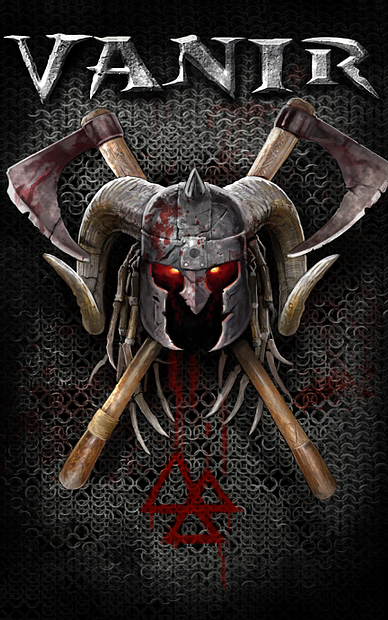
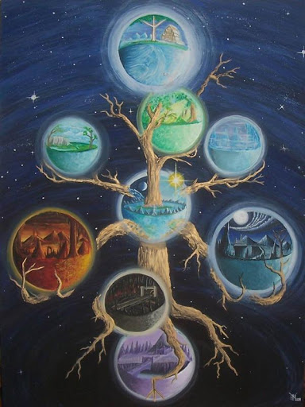

1ra ETAPA -x))Nacimiento((x-
 VHD(( nace como consecuencia de mi salida de AF. Un clan en el que permaneci durante tres años. Durante aquel tiempo trabaje sin pausas demostrando mi motivacion por mejorarme y mejorar el entorno. Se me fue otorgando rangos de cabo a sargento a teniente a comandante y fui senadora.
A medida que se asumen mas responsabilidades y uno se hace cargo de diferentes tareas comienzan a verse los quiebres. Ya desde un inicio se notaban los tirones entre Sylver y Onix unicos FDR de ese Clan por politicas internas que no debieron influir en el trato de los miembros.
1) Onix fundador del Clan AG "Angeles Guardianes" al regreso de su ausencia por trabajo se encontro con AF "Angeles de Fuego" y recibido como visita...
2) Tanto Sylver como Onix habian tenido discuciones a causa del manejo politico, uno de los causales que afecto al total de los lideres fue Barbie-Love en aquel momento conocida como Sylvana al dia de hoy.
3) El clan se partio en dos. Y el FDR Sylver habia decidido una base fuera de la 35 Ruby ..
4) Los Lideres de aquel momento pidieron la expulsion de Barbie-Love para lograr nuevamente la unificacion.
Barbie quedo fuera de Af durante un periodo de tiempo, quitandose su rango de Lider que tanto reclamaban los antiguos como irregularidad. Pasado cierto tiempo su novio actual sylver volvio a reintegrarla con el mismo rango.
Estos tirones llevaron a la salida posterior de muchos miembros de rango alto y mas. Freya Omega Uzukame krauser Hernan Panteon y mas luego mas Senadores y soldados.
Consecuencias: Los mas antiguos de AF. los mejores rangos fueron tomados a menos por esta pareja hasta que decidieron irse.
Ante las quejas de los miembros y ante el abandono de muchos comenzaron a usarse dos palabras : Ignoren ¡¡ y Traidor ¡¡¡
Sylver y la actual sylvana en esas circuntancias y en plena guerra con AG ( Onix habia resuelto renacerlo ), con DM y clanes de Saphire como Crows y mas .. abandonan AF por meses ..
 Tome a cargo el Clan en un estado mas que desvastado y logre sacarlo delante. Llevó mucho trabajo, tiempo y sacrificio y la maravillosa voluntad de unos pocos que eramos en aquel entonces familia.
Tome a cargo el Clan en un estado mas que desvastado y logre sacarlo delante. Llevó mucho trabajo, tiempo y sacrificio y la maravillosa voluntad de unos pocos que eramos en aquel entonces familia.
Logré modificar la Ley de Ignore en la 35 - Logré que no se llamen traidores a mas de un miembro por solo visitar otra base - Logré Formar grupos de Reclutamiento y de entrenamiento - Me hice cargo de las Diplomacias del Clan - Comandé las mejores guerras - y volvimos a formar esa familia.
Al tiempo cuando todo estaba encausado. Regresa sylver y regresa Barbie ( Sylvana ) pretendiendo subirse a un caballo que ya no correspondia con muchas infulas de Poder y estrategias basadas en Hacks.
A partir de alli deje un mensaje en los Grupos y me despedi para siempre de AF.
Desde ese entonces ese Clan hoy Seudo-Clan murió para mí. Dejé el poder para que lo tomen quienes correspondían: sus miembros.
2da ETAPA Desarrollo de VHD
Ya con enemigos a cuestas VHD nace en Base 146 en ese tiempo desocupada y sin clanes que reclamaran. Duro solo un tiempo la estadia ahi y decidimos trasladarnos al join 90.
En ese tiempo muchos compañeros, amigos y hermanos se unieron a este nuevo clan, mientras su FDR recibia propuestas varias de unirse a otros como Legion, Lider o tener parte de Esmeralda al mando.
De mi parte desisti de las mismas y me dedique a trabajar con mi gente. No quise y me resisti a pegarlos a otro nombre que no sea el de la nueva propuesta. Un Clan con Dignidad ¡¡ Honor¡¡ Fuerza ¡¡ y lo mas importante Lealtad ¡¡¡
Trabajamos muy duro y fuimos teniendo desde el primer dia guerras importantes, lo cual, nos mantuvo en entrenamiento y actividad constante..

De este modo seguimos creciendo. Conocimos no solo Ruby sino tambien esmeralda y Sapphire.
Decidimos instalarnos en nuestra base actual join 207 cedida amablemente por star FDR de IMM. Y desde aquel entonces defendida a como de lugar. Mejoramos en calidad y tecnicas con cada guerra que tenemos seamos dominados en numero tal vez por aquellos clanes que comparten cuentas pero no en resistencia.
VHD)) muestra un empuje un empuje hoy en swd "Unico" que se lo debo a cada uno de los integrantes. Los que se han ido porque nadie esta atado y los que tienen ya su buena antiguedad hoy. Los que regresan son bien recibidos y a los que prueban otro tipo de organizacion se les tiende la mano.
Estamos haciendo historia y pretendemos seguir delante con la misma.
Agradecidos de los amigos y de los enemigos que combaten limpiamente.
3ra ETAPA y -x))NDR((x-
El año 2014 comenzó movido, -x))VHD((x- siguió dando y recibiendo invasiones. Teniamos neutralidad con Gs, Fi, Wdc, Ldd y Mc.
Nuestros enemigos entonces eran: AF- DM - TH- Grecia, Imm y tgd. Tdh que se habia vuelto enemigo terminó por extinguir.
Lo mismo AF terminó su ciclo de vida luego de muchos golpes bajos por falta de estrategia.
Febrero: el dia 2 se establece -x))NDR((x- como Confederacion con el Clan OBF (llamado EMD en esa época) . Desde -x))VHD((x-. se trazó la reglamentacion que fue aceptada por ambos. Se pensaba integrar más clanes a la misma pero cerramos el acuerdo solo dos. En la Confederacion los clanes que la componen son mas importantes que el poder central ya que no dependen de ella, éstas comparten algo de soberanía pero no toda ya que son totalmente independientes. Por lo tanto no se habla de Unión y menos de fusión.
-x))NDR((x- funcionó como esperábamos cumpliendo sus objetivos en tiempo y forma. Logró numerosas victorias individuales y en conjunto. Teníamos en ese tiempo también un par de integrantes de Gof y de Gow. La intención fue tenderles una mano para que sigan en actividad y un punto estratégico para recrear sus clanes. -x))VHD((x- Cedió a Obf estos miembros para que los entrene sin buenos resultados por parte del primero.
 -x))NDR((x- ganó el join 134 como base propia en enfrentamiento con Tgd dirigido en ese momento por Pamela y Fran. Fue la época en que xGotsuox, nuestro Sub Fdr decide cambiarse a ese Clan. Se compromete con la Fdr Pamela (Rivas) dejando de lado sus compañeros y gente a cargo en -x))VHD((x-. Cabe destacar entre xGotsuox y la Fdr Kasandra se acordó su salida pacíficamente.
-x))NDR((x- ganó el join 134 como base propia en enfrentamiento con Tgd dirigido en ese momento por Pamela y Fran. Fue la época en que xGotsuox, nuestro Sub Fdr decide cambiarse a ese Clan. Se compromete con la Fdr Pamela (Rivas) dejando de lado sus compañeros y gente a cargo en -x))VHD((x-. Cabe destacar entre xGotsuox y la Fdr Kasandra se acordó su salida pacíficamente.
Ruptura: Abril 2014. Las guerras en ese entonces tenian la característica de ser triples o con mas clanes implicados. -x))NDR((x- formaba un bloque. Pasado el tiempo Obf se dormía o no entraba y lo imperdonable: se retiraba de las batallas a su base. -x))VHD((NDR))x
Avalon decide dejar swd dutante el mes de MAyo provocando confusión en sus miembros llevando a Obf - Emd a una caida abrupta y en la confereracion misma.
El Senado Obf decide la ruptura y la toma de poder proponiendose FDR Ray, entre ellos NExotur y Melina. Estando en contra Gitano y akwin ( miembros sin poder de Emd)
De ese modo se decidió la separacion el 29 de Mayo. -x))VHD((x- quedó intacto mientras Obf-Emd declaró la extinción por la salida de Swd de su Fdr. En ésta época decide retirarse otro sub-Fdr Wacho ( 10 de Junio) por conflictos internos en la toma de decisiones y actividad.
4ta ETAPA AFILANDO ESPADAS
Mediados del 2014 - 2015
Algunos clanes cayeron o simplemente cerraron entre ellos AF TBS AG EOL NG y otros. Los servers estaban activos abasteciéndose y creciendo a expensas de la situacion.
-x))VHD((x- siguio siendo uno de los más activos.
En esta etapa enfrentamos a: EOD ( clan de Heitor )- GRECIA - IMM -DW -DM - TH -ATD - SN - OBF -ROHAM - NK -SB - LS - GD - LD - LOST - GC -TBS- TKO - RW - OL - GLAD - TB - RID - SE - IH - CTK - TGD - BW - ACD - SW ect ... Nos hemos entrenado batalla tras batalla dando prioridad a este punto por la enorme actividad.
Hemos tenido detractores dentro y fuera del clan pero nuestro objetivo permanente se basa en el crecimiento, organización y fortaleza de nuestra gente. Somos leales a nuetras reglas, somos firmes en nuestros objetivos.
Nos dedicamos a cada uno de nuestros integrantes, nos hacemos cargo de que mejora dentro del clan y fuera tambien porque nos une una virtud: la amistad y el Compañerismo.
-))VHD((x- sigue asentándose en la historia de SWD. Estando presente los 365 días del año, marcando estrategias, tácticas y técnicas a lo largo de su recorrido. Marcando presencia cuando otros de congelan, rearman, renacen, resucitan.
La apuesta sigue en pie de mano de Fundadora y de su gente.
" abandonar es cobardia y la salida más fácil, retirarse es humillante cuando has ejercido el ataque, persistir teniendo conocimiento del enemigo es un ARTE "
)) VHD sigue creciendo ((
Al dia de hoy VHD es uno de los Clanes que sigue estando Activo en guerras y uno de los que se compromete a diario a entrenar con la propueta de mejorar dia a dia.
GOOR ASS¡¡¡ Cazadores
Buen Dios¡¡¡ VHD((
-x))Clan Basado en la Mitologia Nordica Pagana((x-
https://www.youtube.com/watch?v=GTd7XeoHwN8